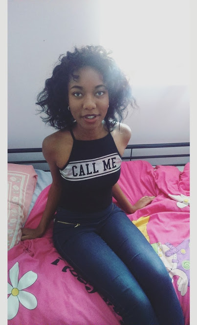
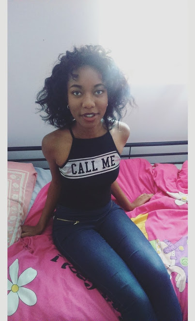

Background
Bantu knots are a cute, funky hairstyle traditionally worn by African women but these knots work well with just about all hair types.
Funnily enough they're not actually knots instead they're small, coiled buns secured against the side of the head.
The great thing about this hairstyle in my opinion is that once you take them out you'll be left with beautiful bouncy curls.
When BantuKnots are taken out the hairstyle is then known as a Bantu Knot-Out.
.
Equipment
- 1 Rat-tail comb
- 1 hairbrush
- leave in conditioner
- light hair oil eg Argon/Coconut Oil
- Bobby pins(optional)
- elastic bands(optional)
- plastic shower cap
- Silk/Satin pillowcase or headscarf(for protection while you sleep)
Method
- Start off with clean hair thats around 60% dry. This hairstyle looks its best when hair is freshly washed and a bit damp as the knots set more easily when the hair is slightly damp as apposed to dry .
- Apply your favourite leave-in conditioner, then follow up with a light oil such as argon oil or coconut oil.This done so as to limit the amount of breakage while we are twisting and wrapping sections of our hair into tight buns.Depending on your hair type the amount of oil and leave-in conditioner used will vary because a certain amount may result in your hair looking greasy which is NOT the look we are going for !
- Now grap a rat-tail comb and divide your hair into as many sections as you please.The amount of sections that you have will vary on how long your hair is.The shorter your hair is the smaller the sections.Please note that if you part your hair into tiny sections there will be more bantu knots and the curls will be tighter.If you part your hair into larger sections there will be less bantu knots and the curls will be looser.
- Take a section of the hair that you previously parted and twist it into one strand.Now wrap this twist into a small bun onto the top of your head.If you have silkier hair you will have to secure your bantu knots with a bobby pin or small elastic band as it will just slide off otherwise.If your hair is similar to mine you will not need to do this as the hair will stay in place.
- Continue step 4 until all your sections of hair are now twisted into bantu knots. If you like you can stop here as you have now achieved the bantu look!. However if you wish to take them out its best to sleep with a plastic shower cap and take them out the next morning .
- When taking your bantu knots out be careful to take your time so as to not cause any breakage.When all your bantu knots are out,slowly seperate them till you achieve the desired amount of curls that you like.
- Well done! You have now mastered the art of Bantu knots and Bantu Knot-out


 
